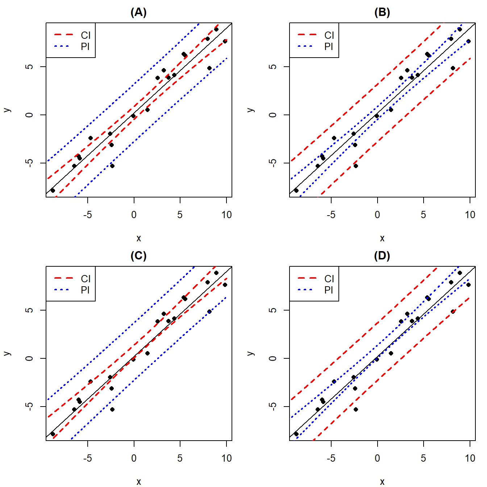

S2Y Lab 6
Interval estimation and hypothesis testing
Interval estimation and hypothesis testing
1 Welcome to S2Y Lab 6
Intended Learning Outcomes:
use various summary statistics and
Routput to compute confidence and prediction intervals;use
Rto produce hypothesis tests for parameters in a linear model;interpret hypothesis tests and confidence and prediction intervals.
1.1 Introduction
In the lectures we learned about the general formulae for the construction of:
- a confidence interval for a linear combination of the model parameters (\(\mathbf{b}^\top\boldsymbol{\beta}\)) with confidence level \(c\)
\[\mathbf{b}^\top\boldsymbol{\hat{\beta}}\pm t\left(n-p; \frac{1+c}{2}\right)\sqrt{\frac{\text{RSS}}{n-p}\mathbf{b}^\top(\mathbf{X}^\top\mathbf{X})^{-1}\mathbf{b}};\]
- a prediction interval for a future value of the response variable for particular values of the predictor variables with confidence \(c\) \[\mathbf{b}^\top\boldsymbol{\hat{\beta}}\pm t\left(n-p; \frac{1+c}{2}\right)\sqrt{\frac{\text{RSS}}{n-p}\left(1+\mathbf{b}^\top(\mathbf{X}^\top\mathbf{X})^{-1}\mathbf{b}\right)}\]
In this practical, it will be demonstrated how these intervals can be computed using R. The emphasis will be on the computation, application and interpretation of confidence and prediction intervals. We will also consider hypothesis testing for parameters in a linear model.
QUESTION: The figures below show the scatterplot of some observations (black circles), the best fitted line (black line), a 95% confidence interval (red dashed line), and a 95% prediction interval (blue dotted line). Which of the figures shows the correct relationship between confidence interval and prediction interval? 
The correct answer is option (A). Here we use two properties of confidence interval and prediction interval:
- Confidence interval and prediction interval are centred at the same best fitting line.
- For the same confidence level, prediction interval is wider than confidence interval.
In addition, looking at the figures, you may notice another property that the width of both interval is narrowest at \(x=\bar x\).
1.1.1 The summary() function for regression models
Before discussing confidence and prediction intervals, let's first revise the output of summary() function for regression models.
Recall the model we created the Sugar in Potatoes example, where we try to predict the glucose content of potatoes from the storage time.
potatoes <- read.csv("potatoesstorage.csv")
Model1 <- lm(Glucose ~ Weeks + I(Weeks^2), data=potatoes)We apply the summary function, which gives the following output:
summary(Model1)##
## Call:
## lm(formula = Glucose ~ Weeks + I(Weeks^2), data = potatoes)
##
## Residuals:
## Min 1Q Median 3Q Max
## -17.405 -11.250 -8.071 12.911 29.286
##
## Coefficients:
## Estimate Std. Error t value Pr(>|t|)
## (Intercept) 200.1693 15.0527 13.298 4.02e-08 ***
## Weeks -19.4431 3.1780 -6.118 7.54e-05 ***
## I(Weeks^2) 1.0304 0.1406 7.329 1.49e-05 ***
## ---
## Signif. codes: 0 '***' 0.001 '**' 0.01 '*' 0.05 '.' 0.1 ' ' 1
##
## Residual standard error: 16.4 on 11 degrees of freedom
## Multiple R-squared: 0.8694, Adjusted R-squared: 0.8457
## F-statistic: 36.61 on 2 and 11 DF, p-value: 1.373e-05As you can see from this output there are a few different elements displayed. A brief description is stated below:
Call: This shows the formula that we used in our regression model.
Residuals: This lists the five-number summary of the residuals from our regression model.
Coefficients: This shows us a summary of estimated coefficients of the regression model.
Within this section the column headers are:
Estimate: The estimated parameter. These can be used to write down the fitted regression model.
Std. Error: This is the estimated standard error of the parameter estimate.
t value: This is the \(t\)-statistic for the parameter, calculated as
Estimate/Std. Error.Pr(>|t|): This is the \(p\)-value that corresponds to the \(t\)-statistic, i.e. \(Pr(X>|t|)\) for \(X \sim t(n-p)\), where \(t\) is the
t valuecomputed above, \(n\) is the sample size, and \(p\) is the number of parameters.
Residual standard error: This is the square root of residual mean squares, which can be linked to the output from the anova() table (Residuals Mean Sq).
Multiple R-squared: This gives coefficient of determination, \(R^2\).
Adjusted R-squared: This gives the adjusted coefficient of determination, \(R^2\) (adj), which adjusts for the number of predictors in the model.
F-statistic: The \(F\)-statistic is the test statistic for the hypothesis testH\(_0\): all \(p-1\) parameters \(= 0\) versus H\(_1\): at least one parameter \(\neq 0\)
p-value: \(p\)-value corresponding to the \(F\)-test, i.e. \(Pr(X>|F|)\) for \(X \sim F(\text{DF}_\text{model},\text{DF}_\text{residual})\).